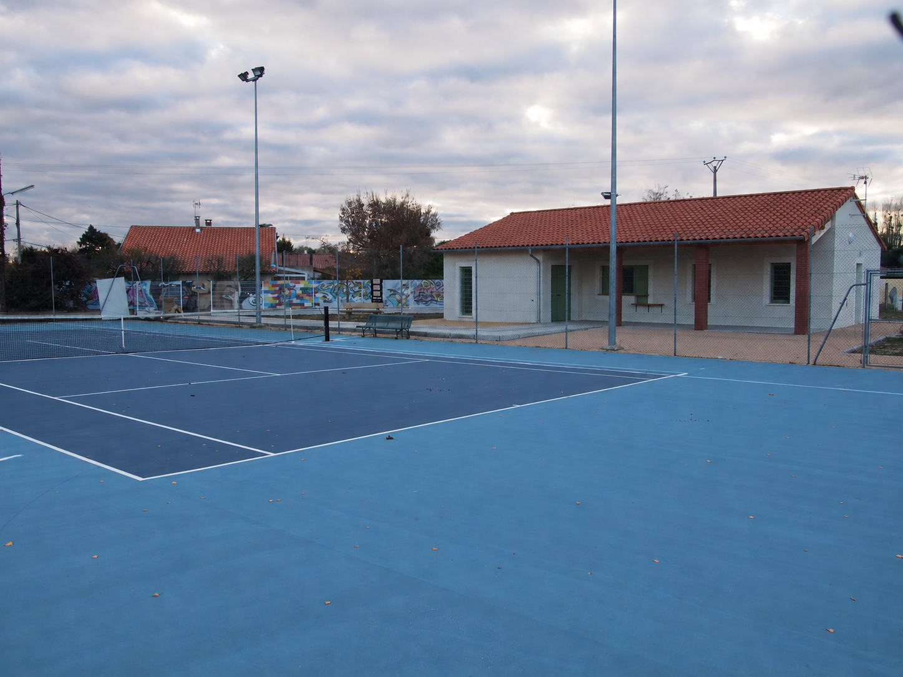
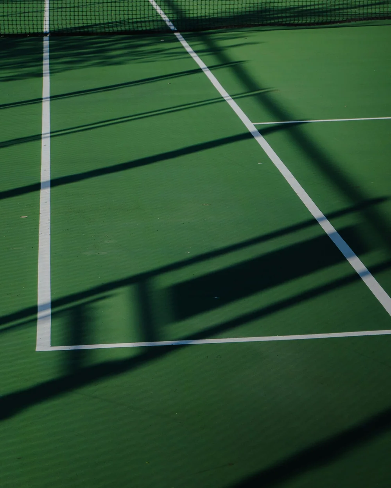

01 / APPRENDRE
L’école de tennis
Découvrir les gestes, prendre confiance et progresser. Contactez le club pour connaître les groupes, les créneaux et les modalités des cours.
Se renseigner sur les coursTENNIS CLUB DE LONGAGES
Les premiers échanges. Le plaisir de progresser.
Les rencontres qui restent.
Votre prochaine partie commence à Longages.

ON SE RETROUVE SUR LE COURT.ApprendreLe plaisir du premier échange
JouerL’envie de se dépasser
Se retrouverLe sport qui crée des liens
LE CLUB
Ici, le tennis est aussi une histoire de rencontres.
Au Tennis Club de Longages, nous partageons une envie simple : faire vivre le tennis et les liens d’amitié entre les membres.
Envie de découvrir la raquette, de reprendre le jeu ou de rencontrer d’autres passionnés ? Échangeons sur votre projet et la formule qui vous correspond.
Faisons connaissanceÀ CHACUN SON TENNIS
Premiers pas ou retour sur le court,
le plus important, c’est l’envie.
Découvrir les gestes, prendre confiance et progresser. Contactez le club pour connaître les groupes, les créneaux et les modalités des cours.
Se renseigner sur les coursRetrouver le plaisir d’échanger, en simple ou en double. Découvrez les formules d’adhésion et renseignez-vous sur les conditions d’accès aux courts.
Voir les formules sur Ten’UpL’envie de jouer des matchs et de relever un nouveau défi ? Parlons de votre niveau et des possibilités de compétition proposées par le club.
Échanger avec le clubLes groupes, les horaires et les tarifs de la saison sont à confirmer directement auprès du club.
BIENVENUE SUR LE COURT
Une question avant de vous lancer ?
Le club vous aide à préparer votre inscription.
Précisez votre âge ou celui de votre enfant, votre niveau et vos disponibilités.
Validez avec le club les cours, les tarifs et les conditions d’adhésion de la saison.
Consulter les offres sur Ten’UpLe club vous indique les démarches d’inscription et les modalités d’accès aux courts.

LA VIE DU CLUB
Les rendez-vous, les nouvelles et les moments partagés : retrouvez l’actualité du Tennis Club de Longages sur Facebook.
Suivre la vie du clubON SE RETROUVE OÙ ?
Les informations utiles
avant de venir jouer.
31410 Longages
Haute-Garonne, Occitanie
Une question sur les cours,
l’adhésion ou la pratique ?
Retrouvez la fiche du club
et ses offres sur la plateforme FFT.
Pour les horaires et les modalités, consultez les offres du club sur Ten’Up ou écrivez à {{CLUB_EMAIL}}. Le club vous confirme la formule, le calendrier et les disponibilités qui correspondent à votre demande.
Les courts se trouvent au 35, chemin de Muret à Longages. Avant de venir, contactez le club pour vérifier les conditions d’accès et les modalités de réservation liées à votre adhésion.
Faites part au club de votre expérience et de votre envie de jouer. Il pourra vous renseigner sur les cours et les formules adaptés, selon les places disponibles.